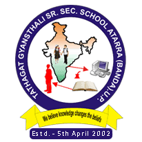

TATHAGAT GYANSTHALI SENIOR SECONDARY SCHOOL |
Home |
About us |
Registration form |
Gallery |
contact us |
The foundation of TATHAGAT GYANSTHALI SENIOR SECONDARY SCHOOL was enthroned by a sacrificant and noble person in the sacred and blessed world of education. This school functions under a registered society "Tathagat Shiksha Samiti" with eminent and renowned member from all walks of life such as educationist, administrators, social workers, lawyers, doctors, engineers technocrats, and economists. It is affiliated to CBSE New Delhi for 10+2 Science Stream and Commerce Stream group and is imparting quality and modern education to not only for student of Atarra but also to student of other cities like Banda, Karvi, Hamirpur, Lucknow, Allahabad , Jhansi ,Noida, Panna, Delhi and Gorakhpur etc. It has a well established hostel with all modern amenities. Our Principal is at the helm of affairs of the school and society. She is benovalent and kind. She motivates the students and, maintains the decorum and disciplined of the school. Her dream is to make the school reach its height of excellence in the nearby all districts. She is dynamics and hard working and always thinks about the welfare and benefits' of her staff and students. Every year the School bagged a lot of prizes in academic and co-curricular activities and each achievement is only due to her efficient approach and motivation.
She also believes that the students passing out from our fully endowed with knowledge, skills and expertise to face the rigours and challenges of the outside world. Her sincereness and geniuses in handling the situation needs no testimony. Our new school building is a massive structure with more than 65 class rooms and six ultra modern laboratories. A milky white building with tinted blue glass gives an eye-catching sight. The school is not only ahead due to its beauty but also for its facilities provided to the student. It has a massive library, art & craft rooms for proper development of child's brain, recitation room music room. Indoor games hall and first-aid room to face any unforeseen circumstances. There is a big cce Room (Continuous and comprehensive evaluation room) for conduction of the examination and for keeping the record or evidence safe. It is in three adjacent building (inter-connected) and calibrated with two lifts. Above all the building has one auditorium having the capacity of 1500-2000 person, and top a well furnished counselling room for the counselling of student for proper projection of their future. Above all in this new building we are imparting education throught smart-classes. We are the first school to adopt this method of teaching in this Bundelkhand region.